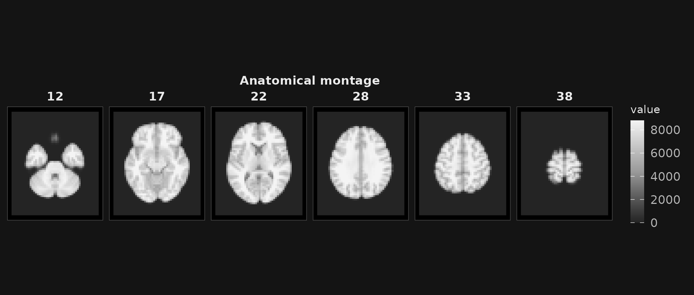
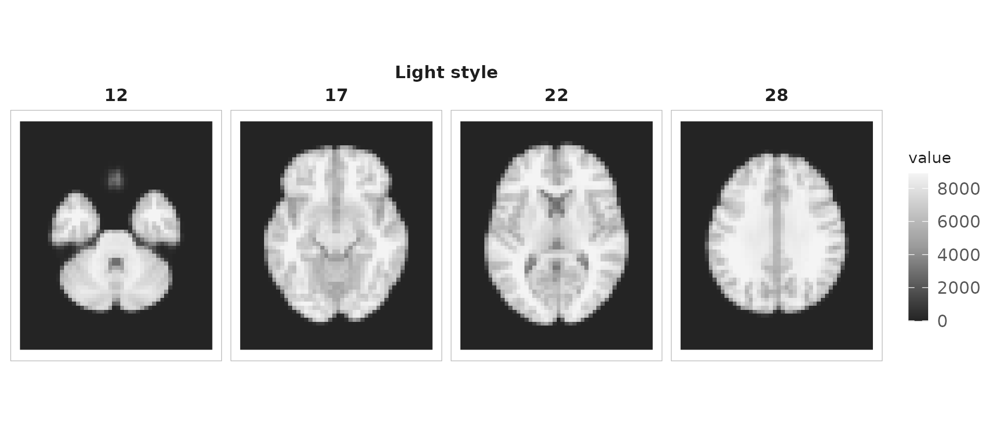
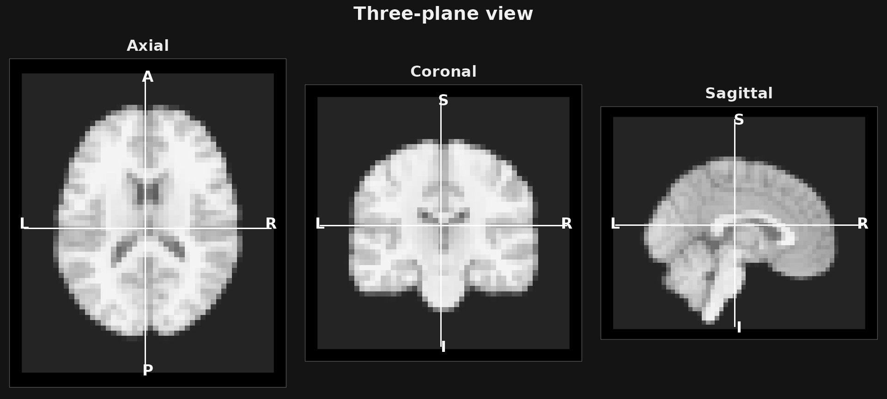
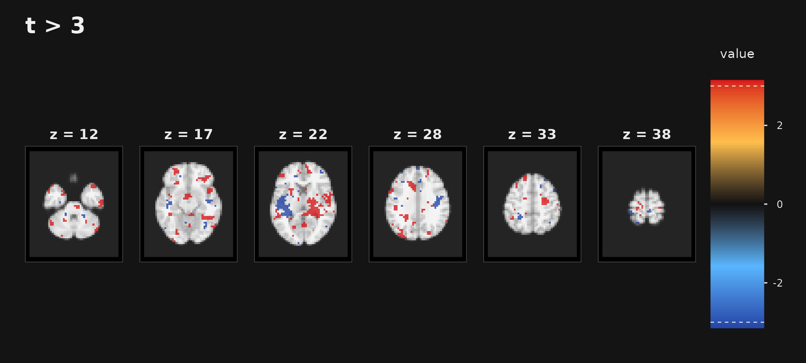
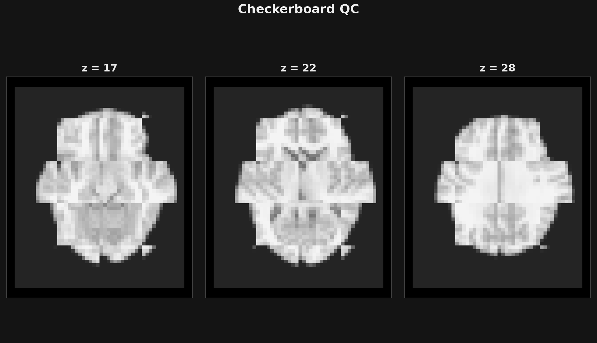
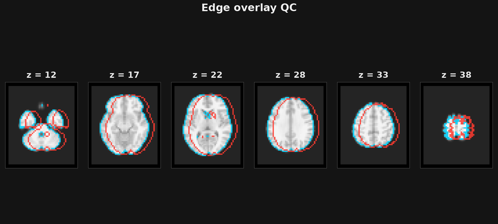

Before anything else, you need to answer one question: does this
look right? The plotting helpers exist for that first visual check.
They take NeuroVol objects, preserve aspect ratio, scale
intensities robustly by default, and return ordinary
ggplot2 objects you can modify or save.
anat <- demo_anatomy()
brain <- demo_anatomy_mask()
stat_map <- demo_stat_map(brain, radius_mm = 6)
identical(space(anat), space(stat_map))
#> [1] TRUEThe statistical map here is fitted, not drawn: a design is planted in
two spheres of a simulated series and a t-statistic is computed at every
voxel. It shares a NeuroSpace with the anatomy, which every
overlay helper requires.
A montage of slices
plot_montage() scans several slices at once and returns
a single ggplot object.
plot_montage(anat,
zlevels = zlevels, ncol = 6,
cmap = anatomy_cmap, range = "robust",
title = "Anatomical montage", style = "dark"
)
Six axial slices with robust intensity scaling.
style = "light" is the version for a manuscript
page:
plot_montage(anat,
zlevels = zlevels[1:4], ncol = 4,
cmap = anatomy_cmap, range = "robust",
title = "Light style", style = "light"
)
The same slices in the light style.
range = "robust" clips to percentiles rather than the
extremes. Use it unless the outliers are the point — a single bright
voxel on the default full range flattens everything else to black.
One location in three planes
plot_ortho() is for when you care about a specific point
rather than a set of slices. The crosshairs confirm that all three
panels show the same place.
plot_ortho(anat,
coord = round(dim(anat) / 2), unit = "index",
cmap = anatomy_cmap, title = "Three-plane view", style = "dark"
)
Axial, coronal and sagittal views through one voxel.
draw = FALSE returns the panels instead of drawing them,
which is what you want when composing or saving figures yourself:
names(plot_ortho(anat, coord = round(dim(anat) / 2), draw = FALSE))
#> [1] "axial" "coronal" "sagittal"Overlaying a statistical map
plot_overlay() puts one volume on top of another. For a
signed map, a diverging palette with symmetric limits keeps positive and
negative comparable:
plot_overlay(
bgvol = anat, overlay = stat_map,
zlevels = zlevels, ncol = 6,
bg_cmap = anatomy_cmap, bg_range = "robust",
ov_cmap = "coldhot", ov_thresh = 3, ov_symmetric = TRUE, ov_alpha = 0.8,
title = "t > 3", style = "dark"
)
Thresholded signed t-map over the anatomy.
It is worth knowing how much survives the threshold — on a real map this is the first number a reviewer asks for:
a <- as.array(stat_map)
c(positive = sum(a > 3), negative = sum(a < -3), total_brain = sum(a != 0))
#> positive negative total_brain
#> 2056 874 28647ov_symmetric = TRUE forces the colour scale to be
centred on zero. Without it, an asymmetric map assigns different colours
to +4 and -4, which is misleading with a
diverging palette.
Cleaning up a noisy map
Unsmoothed statistical maps often look like salt and pepper.
enhance_stat_map() despikes, smooths in an edge-preserving
way, and then sharpens what survives, so clusters read clearly at figure
size:
enhanced <- enhance_stat_map(stat_map)
raw <- as.array(stat_map)
enh <- as.array(enhanced)
# Judge the noise floor on voxels chosen from the RAW map, so both columns
# describe the same voxels rather than each map's own quiet region.
quiet <- which(as.vector(brain) & abs(raw) < 2)
round(rbind(
raw = c(peak = max(raw), above_3 = sum(raw > 3), quiet_sd = sd(raw[quiet])),
enhanced = c(max(enh), sum(enh > 3), sd(enh[quiet]))
), 3)
#> peak above_3 quiet_sd
#> raw 12.414 2056 1.030
#> enhanced 16.005 4522 1.631Read that table carefully, because it is the reason this is a display
tool. The peak grows by about a third — and the spread of the
quiet voxels grows by more. Enhancement amplifies the noise
floor at least as hard as the signal, so the extra voxels clearing
t > 3 are not new discoveries. Enhance for the figure;
threshold and count on the original.
Choosing those quiet voxels from the raw map matters. Score each map on its own sub-threshold voxels and both come out near 1.0, because you are measuring a truncated sample rather than the noise floor.
plot_overlay() and plot_ortho() take
enhance = TRUE to apply it inline.
Checking a registration
Two images on the same grid can be compared directly.
plot_checkerboard() alternates tiles between them, so
misalignment shows up as anatomy breaking across tile edges.
shifted <- demo_shifted(anat, by = 4L)
plot_checkerboard(anat, shifted,
zlevels = zlevels[2:4], tile = 12, ncol = 3,
cmap = anatomy_cmap, title = "Checkerboard QC", style = "dark"
)
Checkerboard against a copy shifted by four voxels. Anatomy steps across tile boundaries.
Checkerboards need room: at six panels across a page the tile steps are too small to see, so prefer a few large slices over many small ones.
plot_edge_overlay() compares boundaries instead, which
is easier to judge when the two images have different contrast:
fixed_edges <- demo_edges(brain)
moving_edges <- demo_edges(demo_shifted(brain, by = 4L))
plot_edge_overlay(anat, fixed_edges, moving_edges,
zlevels = zlevels, ncol = 6,
bg_cmap = anatomy_cmap, title = "Edge overlay QC", style = "dark"
)
Fixed and moving edge maps. Where the colours separate, the images disagree.
Both helpers require matching
NeuroSpace objects and error otherwise. That is deliberate:
a QC plot that silently resampled would hide the very problem you are
looking for. Resample first — see
vignette("resampling-and-orientation").
Colours
resolve_cmap() turns a palette name into colours, and
mapToColors() maps data onto one. Together they cover the
cases the helpers do not:
coldhot <- resolve_cmap("coldhot")
head(coldhot, 3)
#> [1] "#2446A7" "#2548A9" "#264AAA"
probe <- c(-4, -1, 0, 1, 4)
mapToColors(probe, col = coldhot, irange = c(-4, 4))
#> [1] "#2446A7" "#3A5F7F" "#00000000" "#7D602F" "#D7191B"Positive values come back warm, negative cold, and zero is
transparent. Two arguments control the blanking and they are not
interchangeable: zero_col recolours exactly-zero voxels,
while threshold takes a two-element band
and blanks everything inside it to transparent regardless of
zero_col.
mapToColors(probe, col = coldhot, irange = c(-4, 4), zero_col = "#00FF00")
#> [1] "#2446A7" "#3A5F7F" "#00FF00" "#7D602F" "#D7191B"
mapToColors(probe, col = coldhot, irange = c(-4, 4), threshold = c(-2, 2))
#> [1] "#2446A7" "#00000000" "#00000000" "#00000000" "#D7191B"A scalar threshold errors, so pass both ends. Note also
irange: left at its default it spans the data, which for an
asymmetric map puts zero off-centre — the same trap
ov_symmetric exists to avoid.
A palette is a plain character vector, so any vector of colours
works: the anatomy_cmap used throughout this article is
three greys.
Which helper?
| Task | Helper |
|---|---|
| Quick look at one volume |
plot(), as used in the tour |
| Publication slice grid | plot_montage() |
| One location in three planes | plot_ortho() |
| Statistic or mask over anatomy | plot_overlay() |
| Registration, two images | plot_checkerboard() |
| Registration, two edge maps | plot_edge_overlay() |
| Tidy a noisy map for display | enhance_stat_map() |
| Consistent styling for your own ggplots | theme_neuro() |
Four habits worth keeping: range = "robust" for anatomy,
ov_symmetric = TRUE for signed maps,
style = "dark" to inspect and "light" to
publish, and draw = FALSE whenever you want to arrange
panels yourself.
Where to go next
-
vignette("regions-and-searchlights")— producing maps worth plotting -
vignette("resampling-and-orientation")— getting two images onto one grid -
?plot_montage,?plot_overlay,?enhance_stat_map,?theme_neuro